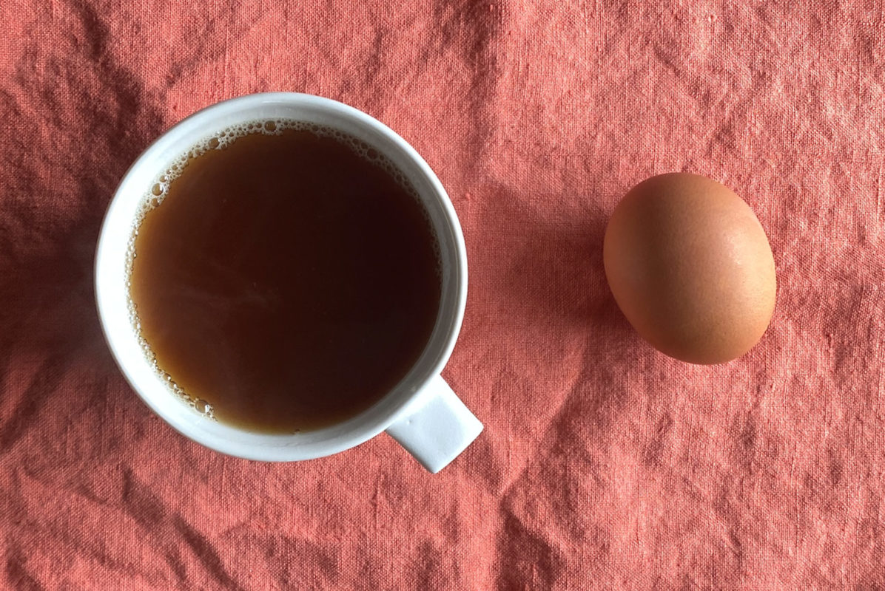

Norwegian Egg Coffee

Description
This is a really weird one, add some eggs to your morning cup of joe!
Ingredients
Steps
- Mix your egg into the coffee grounds to make a sludge-like mixture
- Using a pour over, strain the coffee with hot water into your mug
- Drink it
- Voila!